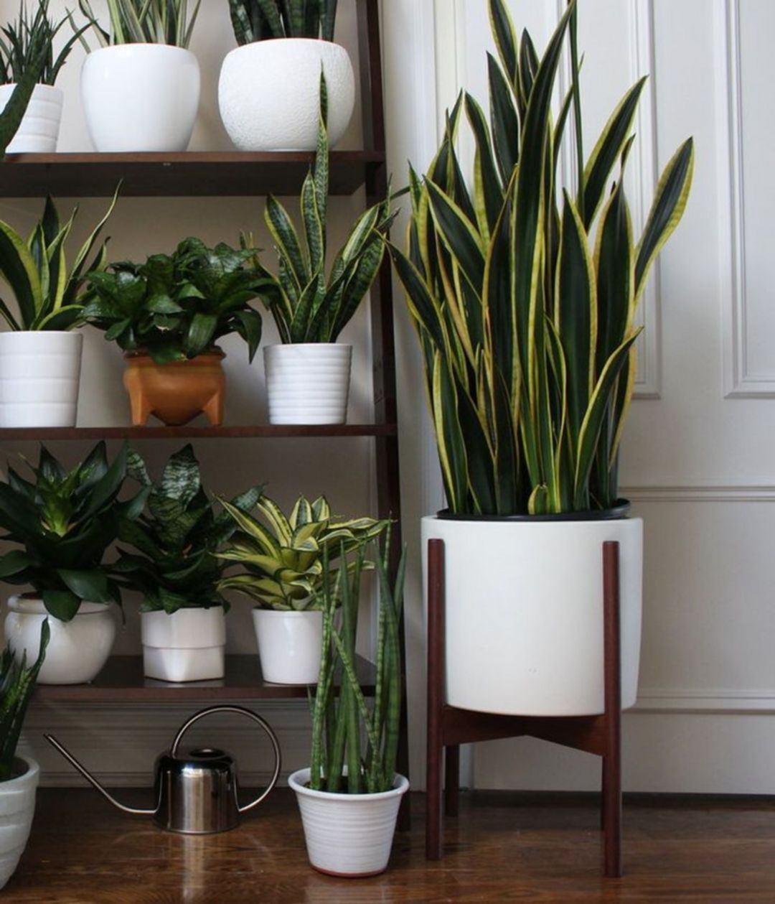

Snake Plant
This low-maintenance plant is one of the best choices for amateur gardeners or frequent travelers as it can tolerate a wide range of light and water conditions.
Botanical name: Sansevieria trifasciata
Benefits: releases oxygen at night,commonly called the snake plant, because of the shape of its leaves.